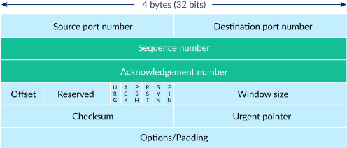
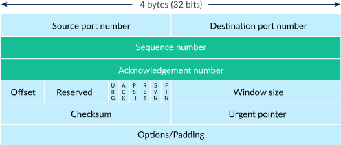
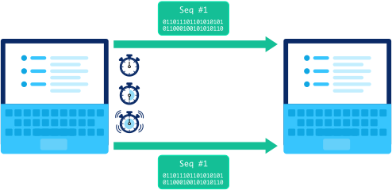

СПОСОБ ПЕРЕДАЧИ ДАННЫХ ЧЕРЕЗ ИНТЕРНЕТ
OSI - TCP/IP - QUIC/UDP - HTTP
OSI MODEL

OSI VS TCP/IP
TCP/IP

Формат пакета


Шаг 1: установить соединение


Шаг 2: ОТПРАВЛЯТЬ ПАКЕТЫ ДАННЫХ
 

Шаг 3: ЗАКРЫТЬ СОЕДИНЕНИЕ

ОБНАРУЖЕНИЕ ПОТЕРЯННЫХ ПАКЕТОВ

ОБРАБОТКА УТЕРЯНЫХ ПАКЕТОВ

ОБРАБОТКА ЗАДЕРЖАВШИХСЯ ПАКЕТОВ
ОБРАБОТКА УТЕРЯНЫХ ПАКЕТОВ
ОБРАБОТКА ЗАДЕРЖАВШИХСЯ ПАКЕТОВ
TCP/IP
ШАГ 1: ПЕРЕНАПРАВЛЕНИЕ БРАУЗЕРА НА URL-АДРЕС

ШАГ 2: БРАУЗЕР ИЩЕТ IP-АДРЕС
ШАГ 3: БРАУЗЕР ОТПРАВЛЯЕТ HTTP-ЗАПРОС

ШАГ 4: ХОСТ ОТПРАВЛЯЕТ ОБРАТНО HTTP-ОТВЕТ

ШАГ 5: БРАУЗЕР ОТРИСОВЫВАЕТ ОТВЕТ

HTTP AND TCP/IP

Версии HTTP
HTTP 1.1 / HTTP 2

HTTP 2 / HTTP 3
ЗАКЛЮЧЕНИЕ